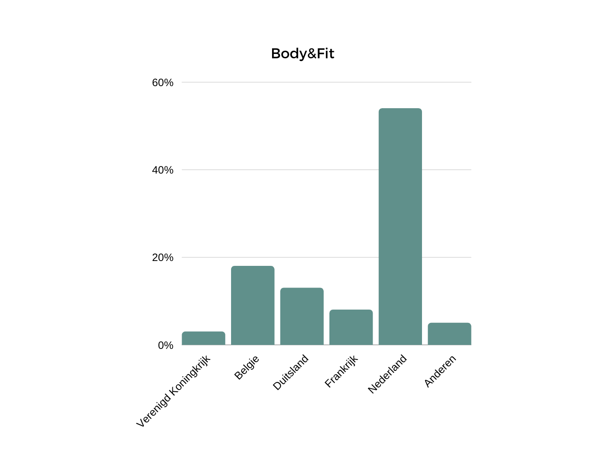
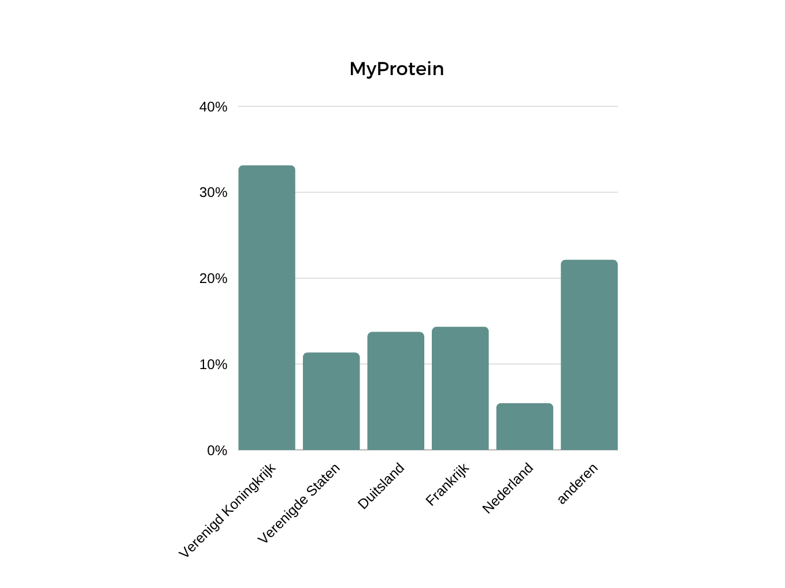
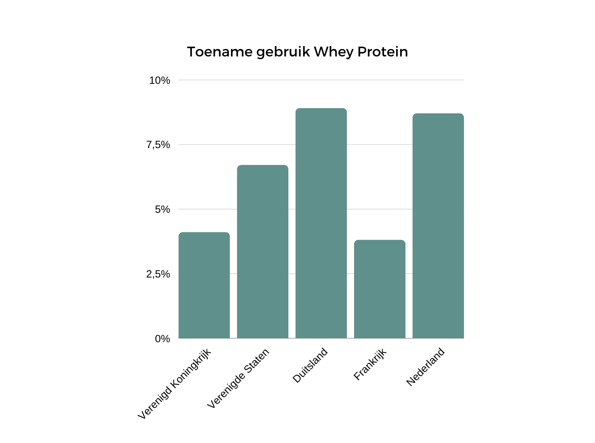
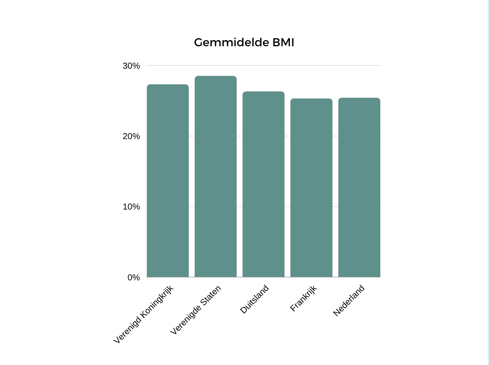

Body&Fit
Deze afbeelding toont een tabel die is gemaakt met informatie wat is opgehaald van het internet. Het laat zien hoeveel procent de landen van de wereld het merk "body&Fit" gebruiken. Uit de tabel blijkt dat Nederland het meeste van dit merk gebruikt en het verenigd koningkrijk als minste van de grootste gebruikers van dit merk.
MyProtein
In deze afbeelding word wederom een afbeelding getoont van een tabel die gemaakt is met informatie dat opgehaald is van het internet. Ook deze laat zien hoeveel procent de landen van de wereld het mer "MyProtein" gebruiken. Uit het tabel bljkt dat Het Verenigd Koningkrijk het meeste van dit merk gebruikt en Nederland als minste van de grootste gebruikers van dit merk.
Whey protein toename
Zonet hebben wij gekeken naar het gebruik van twee van de grootste whey protein merken. Hieronder staat een tabel waarbij data is opgehaald van het internet waar in word getoont met hoeveel procent per jaar in een land het gebruik van whey protein stijgt. Hierbij zie je dat het gebruik van whey protein het snelst groeit in Duitsland met 8,9% en hierna Nederland met 8,7%.
BMI per land
In deze afbeelding word het gemiddelde bmi getoond per land. Alle Data die in dit tabel word getoond is opgehaald van het internet. Hierbij zie je dat de verenigde Staten de hoogste gemiddelde bmi (Body Mass Index) van 28,5 en Frankrijk de laagste gemiddelde bmi van 25,3. De landen die ik hierbij heb gebruikt zijn de grootste Whey protein gebruikers van de wereld. Er zullen vast en zeker wel lagere gemiddelde bmi's zijn.
Conclusie
Waar je nou het meeste invloed van whey protein gebruik ziet in een van de grootste whey protein gebruikers ter wereld is toch wel Nederland. De BMI van Nederland is als een van de gezondste en gebruikt het meeste whey protein poeder wat ook zal betekenen dat er veel mesen die sporten dit gebruiken. Ook is Nederland de laatste jaren een van de meeste gaan groeien in het meer gebruiken van whey protein.
Bronnen
Alle bronnen die ik heb gebruikt:
https://www.similarweb.com/website/myprotein.com/#geography
https://www.similarweb.com/website/bodyandfit.com/#geography
https://www.mordorintelligence.com/
https://en.wikipedia.org/wiki/List_of_countries_by_body_mass_index